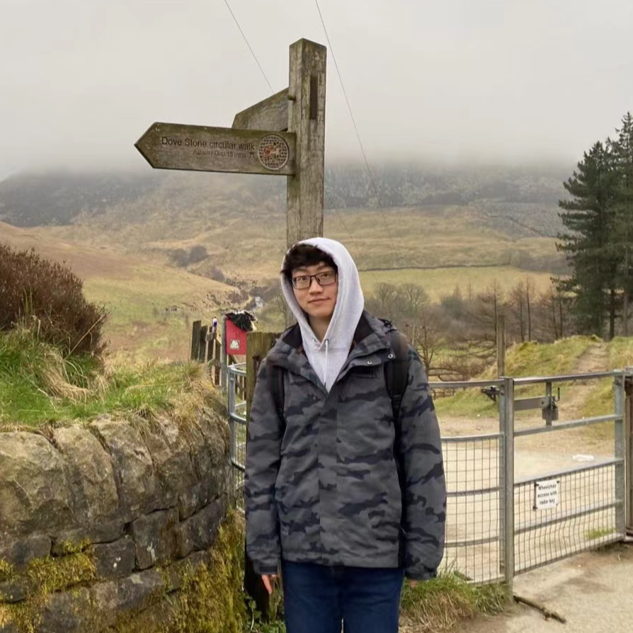
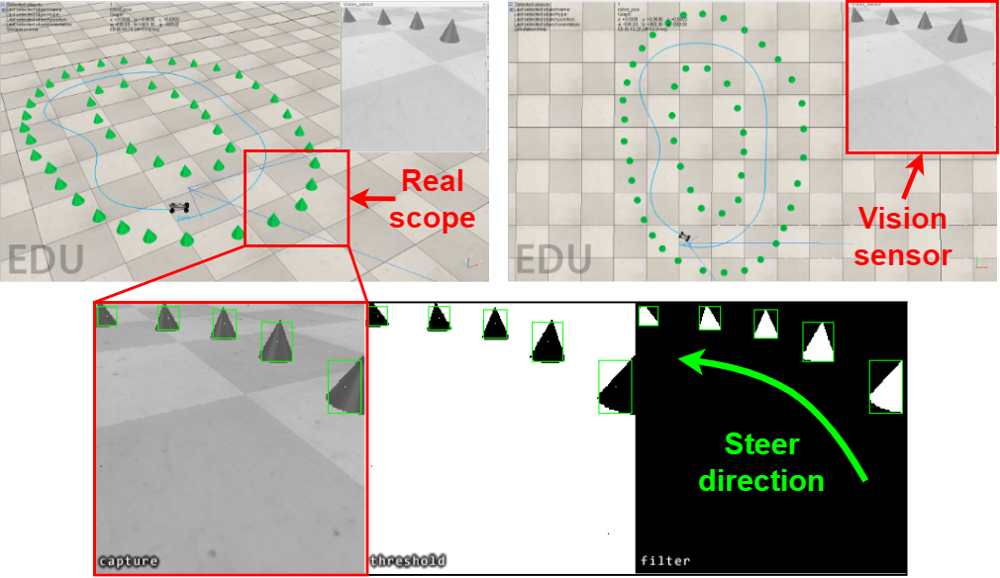

I received my Master degree from the University of Manchester, in 2021.
My major is MSc.Advanced Control & System Engineering, which stimulates me
with a keen interest to conduct further cutting-edge research in the field of
Robotics and Autonomous Systems. Then I joined in the Tactile Robotics Group
in the Bristol Robotics Laboratory (BRL) to start the internship research. These kinds of
curiosities in revolutionary technologies motivate me to apply for a PhD.
My main area of interest is applying artificial intelligence into robot learning.

 |
 |
A fully-simulated environment is proposed by integrating an on-sensor visual computing
device, SCAMP, and CoppeliaSim robot
simulator via interface and remote API. The photosensitive
chip inside the SCAMP is specifically customised and designed to integrate a pixel processor array.
The output of the camera is no longer the images but the processed information.
Therefore it can have several advantages
than ordinary cameras, such as cpu processing speed, wire bandwith upper limitation. Within this
platform, a mobile robot obstacle avoidance and target navigation with pre-set barriers
is exploited with on-sensor visual computing, where images are captured in a robot simulator
and processed by an on-sensor processing server after being transferred. This developed platform
and associated algorithms for mobile robot navigation are available online.
A Graph Neural Network (GNN)-based approach is proposed for object identification
using a soft biomimetic optical tactile sensor called the TacTip.
The TacTip is a family of optical tactile sensors which can convert physical contact (tactile stimuli)
into light, then a camera is used to record the physical contact information.
The obtained tactile images can be transformed into graph format to further analyse
the implicit tactile information through GNNs. The experimental results indicate
that the proposed method is effective whose best object recognition accuracy can reach
99.53%. To evaluate the models' interpretability, different Grad-CAM methods are
used for visual explanations. Compared to traditional CNNs, it demonstrated that
the output features of our GNN-based model are more intuitive and interpretable.
My research interest mainly focuses on intelligent robotics, and my main research target is
to enhance the level of autonomy for robots. More specifically,
I am interested in deep imitation learning methods, which combines imitation learning with deep learning.
This method is inspired by human learning process, since we normally learn a series of skills by observing
teacher's behaviour. With this approach, the robot can learn from expert demonstration to become more
intelligent , which helps to carry out more complex tasks automatically or assist human in dynamic and unstructured environment.
Deep imitation learning is an attractive approach but also has inherent limitations. The
deep neural network used for deep imitation learning is a black-box model, where the decision-making process
of the robot cannot be traced in a way that humans can understand. Therefore, Explainable Artificial Intelligence (XAI)
for robotics is worth developing. XAI can enhance human's trust to robot's behaviour, and can bring tangible benefits to real-world applications.